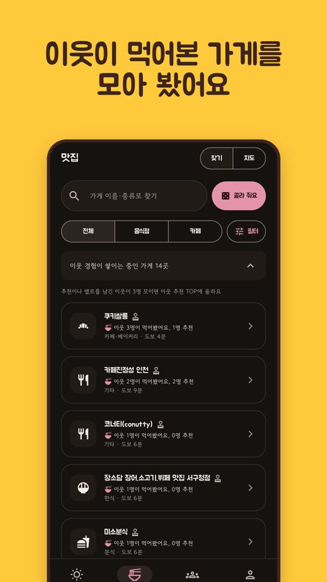
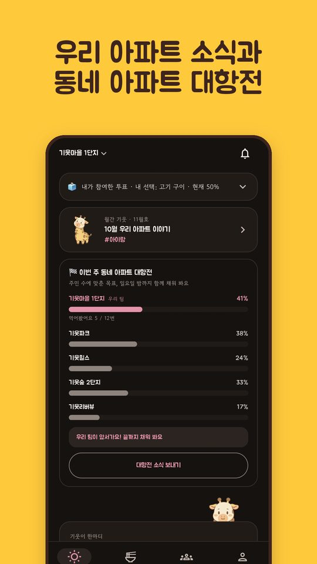

기
아파트 이웃이 먹어본 곳으로 오늘 저녁 고르기
기웃기웃 이야기 · 2026.11.09
"오늘 저녁 뭐 먹지?" 동네 맛집을 찾을 때 별점과 광고 순위부터 보게 되지요. 그런데 정말 궁금한 건 바로 옆집 이웃은 어디서 먹었는지예요. 기웃기웃은 같은 아파트 이웃이 실제로 먹어본 기록만 모아서 보여 줘요.
1. 먹어봤어요 한 번이면 충분해요
가 본 식당에서 먹어봤어요를 누르면 끝이에요. 추천해요·별로예요를 고르거나, 먹은 메뉴와 한마디, 사진 한 장을 남길 수도 있어요. 이웃 기록이 모이면 가게마다 "이웃 3명이 먹어봤어요"처럼 숫자로 쌓여요. 별점은 없어요.

앱 화면 (스토어 소개 이미지)
2. 오늘 우리 아파트 소식
앱을 열면 오늘 우리 아파트에서 이웃들이 새로 먹어본 곳, 반응이 모인 리뷰, 진행 중인 투표가 한 화면에 짧게 정리돼요. 끝까지 내리면 "오늘 우리 아파트 소식은 여기까지예요" — 짧게 보고 닫으면 돼요.

앱 화면 (스토어 소개 이미지)
3. 그래도 못 고르겠다면, 룰렛
오늘 뭐 먹지 룰렛이 점심·저녁 메뉴를 대신 골라 줘요. "이웃이 가본 곳만"으로 좁히면 우리 아파트 이웃이 먹어본 가게 안에서만 돌아가요.
어떻게 시작하나요?
구글·카카오·애플 계정으로 로그인하고, 우리 아파트를 위치로 한 번 인증하면 돼요(위치는 저장하지 않아요). 인증하면 근처에서 먹어본 곳 3곳을 고르는 것으로 바로 시작해요. 전국 2만여 곳의 아파트에서 쓸 수 있어요.
이웃 이름과 이메일은 다른 사람에게 보이지 않아요. 광고는 "광고"로 표시되고 이웃 기록 순서와 관계없어요.